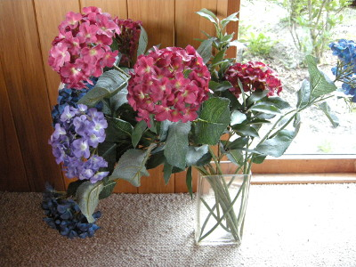
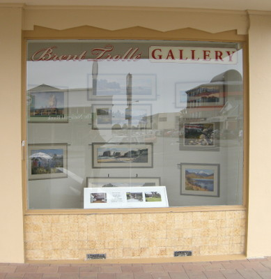
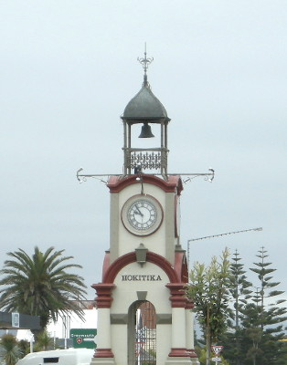
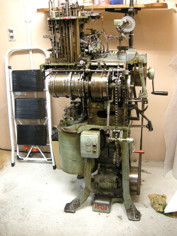
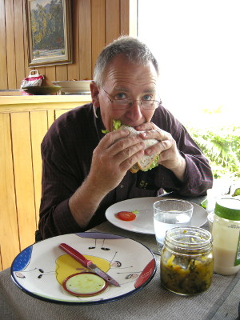

釣行日誌 ＮＺ編 「翡翠、黄金、そして銀塊」
ホキティカの町にて
2010/12/02(THU)-1
ブリントさん宅の客間の広いベッドで熟睡し、今朝は７時に起きた。居間の窓辺に置かれた花瓶に活けられた、紫陽花の花が美しかった。

食堂でお米を炊いて、またまた卵かけご飯の朝食と紅茶を頂く。その後、洗濯機を借りて、釣行で溜まっていた衣類を洗う。2001年、ワイカト大学留学時にホームステイ先で、洗濯用洗剤と食器用洗剤を間違えて投入し、台所中を泡だらけにしてしまった前科を持つ身なので、慎重に手順を聞いて洗濯を行う。（笑）
今日の午前中は暇なので、ホキティカの町までブラブラと散歩がてら土産物を買いに行くことにした。高台にあるブリントさん宅から小径を降りて、車道へ出る。道路沿いの空き地の芝生が綺麗に手入れされているのに感心する。
ホキティカは、ウィキペディア英語版によると、人口約3000人足らずの小さな町である。
主にグリーンストーン（翡翠）の工芸品を中心とした観光と酪農が主産業のこの町は、南島西海岸を旅する者にとっては重要な立ち寄り地となっている。
ブラブラと中心街をさまよいつつ歩いて行くと、小さなビルの一角に、ブリントさんの絵を紹介するショーウィンドウが設けられていた。大きなガラス窓には Brent Trolle GALLERY と書かれており、中には10点ほどの作品が飾られている。どれもニュージーランド南島西海岸の風景を描いた作品ばかりである。

それらを眺めていると、額縁の中から風の音や波のさざめきが広がって来るような気がしてくる、とても印象的な絵ばかりである。ウィンドーの下部にはブリントさんの自宅兼アトリエを説明したパンフも展示されている。これを見て、徒歩15分ほどのアトリエを訪れる旅行客も多いそうだ。
しばらく歩くと、ホキティカの中心部にあり、この町の象徴である時計塔を初めてじっくりと見ることができた。

一軒の翡翠のみやげ物店にて、どこか見ておくべき店はないかと訊ねると、ホキティカ ソックマシンミュージアム Hokitika Sock Machine Museum という博物館を教えてくれた。
行って見ると、小さな店構えであったが、中にはアンティークの靴下編み機械が所狭しと陳列されており、ニュージーランドのウール産業の歴史に触れることができた。

色とりどりの毛糸や靴下、帽子、野生動物であるポッサムの毛糸なども売っていた。手頃な価格で洒落た色づかいのウールキャップがあったので、二つお土産に購入した。
帰り道もウィンドウショッピングを楽しみつつ、のどかなドライブウェイと急な登り坂の小径を通って戻ってきた。ブリントさんが食堂でくつろいでいたので、洗濯物を干した後で、僕も紅茶をいただきながら、釣り談義を楽しんだ。彼の言うには、南島西海岸のシビアなブラウンを狙う釣りでは、フライリールの色は、目立たず、太陽光に反射しないつや消しの黒がベストだとのこと。長年の経験を基に言われているのだから、間違いは無いであろう。ニュージーランドのロッドメーカー、キルウェル社からは、ロッドの反射光で鱒を脅かすことが少ないという宣伝文句で、マット仕上げのモデルも販売されていたこともある。
さらに、ブリントさんは、ロッドの継ぎ方、抜き方についてもレクチャーしてくれた。継ぎ目の部分をしっかり保持して捻りながら差し込んでゆき、抜く時も捻りながら行うとのことだった。（帰ってから調べると、これはスリップオーバーフェルールの場合であった。詳しくはティムコの記事を参照のこと）
などとおしゃべりを楽しんでいると、玄関にお客さんが来た。どうやらギャラリーでパンフを見て、アトリエまで訪ねて来たらしい。ブリントさんが応対し、アトリエへ案内していった。オーストラリア訛りの強いおばさん二人連れであった。
おばさんたちに一通りアトリエと手持ちの絵を案内した後で、昼食となった。ブリントさんが食パンと冷蔵庫のレタスとトマト、瓶に入ったグレースさん手作りのピクルスなどで、大きいサンドイッチを作ってくれた。感謝しつついただく。パンは少し色が付いており、日本の白い食パンよりもコクのある味がして美味しかった。

腹ごしらえが済んだので、ブリントさんは午後から庭の芝刈りをすることになった。何か手伝うことは無いかと聞くと、
「おお、それじゃぁ歩道に敷いた砂利を一つずつ布で拭いて、ワックスをかけてくれるか？」
と言って笑った。いつものジョークである。
釣行日誌ＮＺ編 目次へ
サイトマップ
ホームへ
お問い合わせ